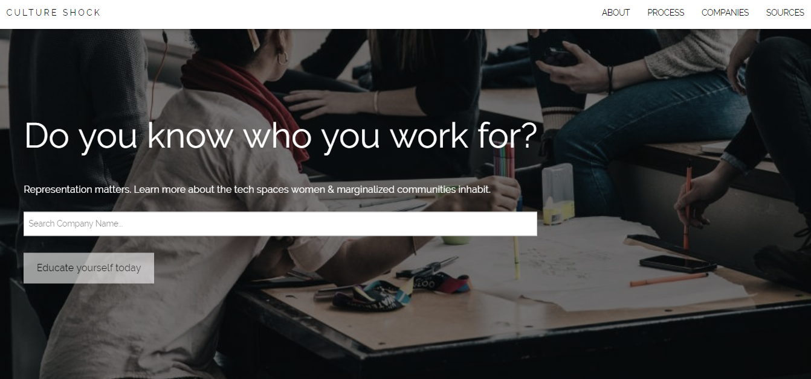

Here's a portfolio of my current and past projects.
3D Animations | April - May 2019
Pinball / Weird Machine project using Blender and Photoshop.
Animation Stills
Culture Shock | Feb 2019
Culture Shock's format is similar to the platforms of Rate My Professor and Glassdoor. It is a web-based application that displays the overall culture and representation at major tech companies, with ratings based on reports released from the businesses themselves and employee reviews. I used HTML, CSS and Javascript to build the main page layout based on wireframes produced by my teammates from HackHer413's 2019 Hackathon.
GitHub Repo
Hack Inclusive | Nov 2018


Hack Inclusive is a mock website made for Technica's 2018 Hackathon. The site is made to find inclusive hackathons in your area and provide resources to help you prepare thinking like a Hackathon Hacker.
GitHub Repo DevPost Submission
Team Zillow | Oct 2018


Team Zillow is a mock website made for a Girls Develop It Hackathon, meant to represent a realtor's professional website that included Zillow APIs to pull the reviews. I was responsible for the front-end, using HTML/CSS to build the site.
GitHub Repo
Tic-Tac-Toe | July 2018

Assigned as a final project for my Advanced C++ Programming class, I decided to work on the challenge outside of class to further to develop the game. Will possibly add in AI for a Computer player.
GitHub Repo
ConnectHER | Sept 2016


At the AT&T Women in Tech Hackathon, my team and I create ConnectHER. ConnectHER is a web-based application to connect underprivileged women and girls interested in technology with mentors and organizations. I was responsible for the front end, using HTML/CSS and Javascript.
GitHub Repo
STEM Corner | March 2015

Created at my second Hackathon, STEM Corner is a website to provide high school students easy access to STEM related events and opportunities. The promotional site won our team first place at GenTech All-Girls Hackathon: HackED 2.0.
DevPost Submission
High School Projects | Sept 2012 - June 2015
Apart of the Programming track during my time at Bayside High School, we were required to document our progress, along with our assignments, using Google Sites for each year we learned a new programming language.
App Inventor for Android C# Java